AJUDA DO REPOSITÓRIO
O
Repositório usa a plataforma DSpace que reúne, distribui
e preserva documentos científicos e de investigação em formato digital.
Aqui pode encontrar artigos em livros de actas, artigos em revistas
internacionais e nacionais, livros e capítulos de livros, publicações
pedagógicas, relatórios técnicos, resumos em livros de actas, teses de
doutoramento e mestrado e conjuntos de dados em diversos formatos
digitais. São adicionados frequentement novos conteúdos, comunidades e colecções.
O seu conteúdo está organizado em torno de comunidades que podem
corresponder a entidades administrativas, por exemplo faculdades,
departamentos, laboratórios ou centros de investigação. Dentro de cada
comunidade pode haver um número ilimitado de sub-comunidades e um
número ilimitado de colecções. Cada colecção pode conter um número
ilimitado de documentos.
Percorrer permite-lhe iniciar a sua pesquisa por:
Comunidades & Colecções: através das comunidades, por ordem alfabética; permite ver as sub-comunidades e colecções dentro de cada comunidade.
Títulos: através de uma lista alfabética de todos os títulos dos documentos no Repositório.
Autores: através de uma lista alfabética de todos os autores de documentos no Repositório.
Assuntos: através de uma lista alfabética de temas atribuídos a documentos no Repositório.
Data de Publicação: através de uma lista de todos os documentos no Repositório, por ordem cronológica.
Deverá registar-se no sistema (escolhendo a opção “Área Pessoal”) se pretender:
- Inscrever-se numa colecção e receber por e-mail actualizações quando novos documentos forem adicionados
- editar a sua conta
- "Área Pessoal" acompanha as suas inscrições e outras
interações com o Repositório que exigem permissões específicas (por exemplo, se
quiser depositar os seus próprios documentos).
Submeter é a função que permite aos utilizadores
registados depositar um documento no Repositório. O processo inclui o
preenchimento de informações sobre o documento num formulário de
metadados e o depósito do documento digital.
Área Pessoal é uma página
pessoal que é mantida por cada membro. Esta página pode conter uma
lista de documentos que estão em processo de depósito, ou uma lista de
documentos que aguardam revisão e/ou aprovação. Esta página irá também
disponibilizar as informações sobre os serviços pessoais oferecidos
pelo Repositório, tais como alertas por e-mail activados por colecção
quando novos documentos lhe forem adicionados.
Editar conta permite a alteração dos dados pessoais.
Ajuda é o texto que lê neste momento.
Para pesquisar em TODO o Repositório, utilize a caixa na parte
superior da barra de navegação do lado direito.
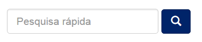
Algumas indicações de pesquisa:
Pesquisa rápida
A(s)
palavra(s) digitada(s) na caixa de pesquisa serão pesquisadas em todos
os campos - título, autor, assunto, resumo, série, editor … de cada
documento existente.
No contexto deste repositório, foi configurada a pesquisa em texto integral, pelo que também será
pesquisado o texto integral de todos os documentos depositados.
Palavras não pesquisadas (stopwords)
-
-
palavras que não são pesquisáveis. O motor de pesquisa ignora
determinadas palavras que ocorrem com frequência, mas não acrescentam
valor para a pesquisa. Eis alguns exemplos:
"a", "and"
, "are" , "as" , "at" , "be" , "but" , "by" , "for" , "if" , "in" , "into",
"is" ,"it"
,"no" , "not" , "of" , "on" , "or" , "such", "the" , "to" , "was"
Truncar
Use um asterisco (*) depois da raiz de uma palavra para obter todas as palavras que começam por essa raiz, por exemplo:
Sele* recuperará
selecionar, seletor, seleção, seleções
Pesquisa por frase
Para pesquisar usando várias palavras, organizadas como frase, coloque aspas (") antes e depois da frase.
"mudança organizacional"
Pesquisa por termo exacto
Coloque um sinal mais (+) antes de uma palavra, se pretende que ela
apareça no resultado da pesquisa. No exemplo seguinte a palavra
"training" é opcional, mas a palavra "dog" deve estar no resultado.
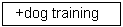
Refinar a pesquisa
Coloque
um sinal menos (-) antes de um termo se não quer que ele apareça nos
resultados de pesquisa. Em alternativa, pode usar NOT. Por exemplo, na
pesquisa
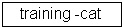
ou 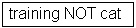
obterá os documentos que contenham a palavra "training", excepto aqueles que também contêm a palavra "cat".
Pesquisa Booleana
Podem ser utilizados, para combinar termos, os seguintes operadores booleanos:
Note que eles devem ser utilizados em MAIÚSCULAS!
AND - para limitar a pesquisa a documentos que contenham todas as palavras ou frases combinadas com este operador. Por exemplo,
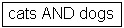
irá recuperar todos os documentos que contenham simultaneamente as palavras "cats" e "dogs".
OR
- para ampliar pesquisas a documentos que contenham qualquer uma das
palavras ou expressões em torno deste operador. Por exemplo,
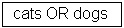
irá recuperar todos os documentos que contenham quer a palavra "cats" quer a palavra "dogs".
NOT - exclui documentos que contenham a palavra após este operador. Por exemplo,
irá recuperar todos os documentos que contêm a palavra "training" excepto os que contêm também a palavra "cat".
Podem utilizar-se parênteses para construir uma equação de pesquisa (agrupar termos e operadores de pesquisa). Exemplo:

A página de pesquisa avançada permite especificar os campos que
deseja pesquisar e combinar esses termos com os operadores Booleanos
"and", "or" ou "not".
Pode limitar a pesquisa a uma comunidade, seleccionando-a na caixa
"Pesquisar". Se quiser que sua pesquisa abranja todo o Repositório,
deixe o valor que aparece por defeito.
Em seguida, seleccione o campo específico, seleccione o operador booleano na caixa correspondente e
digite a palavra ou frase a pesquisar na caixa de texto.
Nota: Deve utilizar as caixas de entrada por ordem. Se deixar a primeira em branco, a pesquisa não irá funcionar.
| PESQUISA POR ASSUNTO |
topo |
Um vocabulário controlado é um conjunto de termos que formam um
dicionário de descritores de conteúdo ou assunto. São mantidos por
organismos de normalização, que garantem a uniformidade de
classificação dos documentos nos repositórios. Constituem ajuda à pesquisa,
aumentando a probabilidade de recuperar documentos relevantes para o
utilizador.
Filtrar a lista de assuntos irá remover dos resultados da pesquisa
os documentos que não coincidem com o filtro usado. Os restantes são
qualquer categoria ou sub-categoria onde se inclui o filtro em qualquer
lugar na hierarquia.
Para procurar no repositório documentos por assunto, indique nas caixas que sejam necessárias o campo "Assunto" e de seguida indique o termo a pesquisar na caixa e clique em "Atualizar".
O conteúdo do Repositório está organizado em comunidades que podem
corresponder a entidades administrativas, por exemplo faculdades,
departamentos, laboratórios ou centros de investigação. Dentro de cada
comunidade pode haver um número ilimitado sub-comunidades e um número
ilimitado de colecções. Cada colecção pode conter um número ilimitado
de documentos. Esta organização do Repositório dá-lhe flexibilidade
para responder a diferentes necessidades das comunidades,
permitindo-lhes
Cada comunidade tem sua própria página de entrada, que pode conter
informações, notícias e links de acordo com os interesses dessa
comunidade, bem como uma lista das colecções dentro da comunidade.
As Comunidades podem manter um número ilimitado de Colecções. As
Colecções estão organizadas por tipo de documento. Diferentes Colecções
podem ter diferentes políticas.
Cada Colecção tem sua própria página de entrada, que pode conter
informações, notícias e links de acordo com os interesses dos
utilizadores dessa colecção, bem como uma lista das colecções dentro da
comunidade.
| ENTRAR/REGISTAR-SE NO REPOSITÓRIO |
topo |
Quando se acede a uma área do Repositório que requer autorização, o
sistema irá pedir-lhe para fazer login. Todos os utilizadores podem
registar-se para se tornarem subscritores. Algumas funções, como é o
caso do depósito de documentos, são restritas e requerem autorização da
comunidade.
Antes de efectuar login pela primeira vez, será necessário clicar no
botão "Editar Conta " e seguir as instruções.
Depois disso, será necessário digitar o seu endereço
completo de e-mail e respectiva password no formulário
que aparece. Não é sensível a letras maiúsculas ou minúsculas.
Exemplo:
moniker@mycorp.com
Não esqueça que a sua password é sensível a letras maiúsculas ou minúsculas. Clique em "Entrar" para continuar.
Caso a sua instituição possua algum tipo de autenticação federada como por exemplo LDAP, deverá colocar apenas o seu nome de utilizador e respetiva password. Nestes casos não necessita de efetuar um registo de utilizador prévio, basta autenticar-se com os dados habituais.
Interrupção do processo de depósito:
Em qualquer passo do processo de depósito pode parar e guardar o seu
trabalho para o retomar posteriormente, clicando no botão
"cancelar/guardar". Os dados já introduzidos serão armazenados até que
o processo seja retomado e, nessa altura, a sua página "Área Pessoal" irá lembrar-lhe que tem uma tarefa em curso. Se sair acidentalmente do processo de depósito, pode sempre retomá-lo a
partir da sua página "Área Pessoal". Também pode cancelar o depósito em qualquer altura.
Barra de Progresso – Botões no cimo da página:
No topo da página irá encontrar 7 botões que representam cada uma das etapas no processo de depósito. À medida que avança, vão mudando as cores dos botões. Depois de começar podem usar-se
estes botões para andar para a frente e para trás dentro do processo de depósito, clicando sobre eles. Não se perdem dados nas deslocações para a frente e para trás.
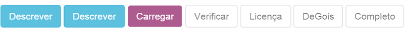
Escolha da Colecção
Só poderá depositar trabalhos nas coleções em que possua permissões.
Se não tiver permissão para depositar o documento na colecção pretendida, entre em contacto com o administrador da colecção ou do repositório para mais informações.
Se quiser depositar um documento e não encontrar uma comunidade adequada, entre em contacto com o administrador do Repositório para saber se é possível criar uma nova comunidade.
Tendo permissões de depósito, e clicando em "Iniciar novo depósito" na sua área pessal, poderá escolher entre 3 processos de submissão diferentes:
- Submissão Manual - Escolhendo a coleção e clicando em "Submissão Manual".
- Submissão por Identificar - Colocando um identificador da publicação para recuperar os metadados (PubMed ID, DOI, arXiv ID, CiNii NAID), bastando indicar o identificar e clicar em "Pesquisar".
- Através de um ficheiro com referências bibliográficas num dos seguintes formatos: pubmedXML, crossRefXML, arXivXML, ciniiXML, bibtex, ris, endnote, csv e tsv. Neste processo deverá submeter o ficheiro, indicar a coleção e clicar em "Processar" para o ficheiro ser analisado.
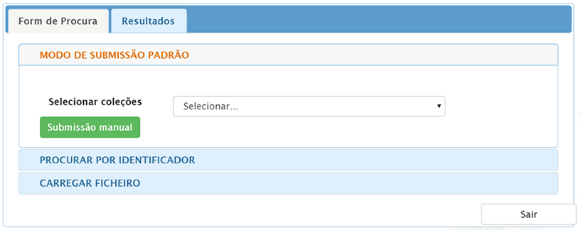
Seja qual for a opção de submissão do trabalho, poder adicionar ou editar os vários campos nos formulários apresentados. Podem existir campos distintos com base no tipo de produção, por exemplo, as teses e dissertações têm campos distintos dos restantes trabalhos.
As informações que lhe são pedidas a seguir são os metadados que permitirão aos utilizadores recuperar o seu documento utilizando motores de pesquisa. Quanto maior for a riqueza de metadados, mais fácil será encontrar o documento; por favor preencha todos os campos que
se aplicam ao seu documento.
Autor:
Este campo pode
ser o nome de uma pessoa, de uma organização ou de um serviço responsável pela criação do documento ou que contribuiu para o seu conteúdo. Clicando no botão "Adicionar mais" podem adicionar-se tantos
autores quantos os necessário. Exemplos:
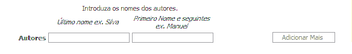
Se o autor for uma organização, escreva o nome da organização na caixa de entrada correspondente ao "último nome"
Título:
Digite o nome completo e adequado através do qual o documento deve ser conhecido. Todos os documentos devem ter um título!
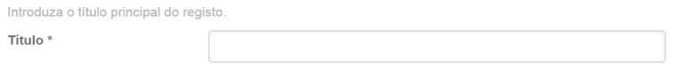
Outros Títulos:
(nota - esta caixa de entrada só aparece se, na primeira página de descrição, tiver indicado que o documento tem mais de um título.) Se o seu item tem um (ou mais) título(s) alternativo(s)
válido(s), por exemplo, um título noutra língua e/ou uma abreviatura, digite-o(s) nesta caixa. Exemplo:
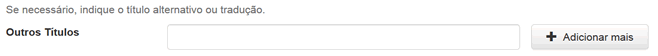
Data de Edição/Publicação:
Se o documento foi previamente publicado ou distribuído, indique aqui em que data. Se não sabe o mês, mantenha o que aparece por defeito "(Sem
Mês)"; se souber, seleccione um mês a partir do menu. Se não sabe o dia
exato, deixe a caixa vazia.
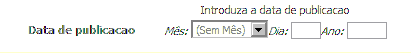
Editora:
Digite o nome do editor do documento.
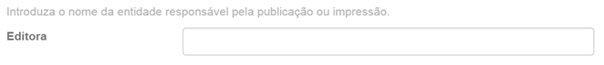
Citação:
Introduza os dados da citação deste documento, quer se trate de um artigo de revista ou de parte de um trabalho maior, como um capítulo de livro. Para artigos de revista, inclua o título da revista, o número do volume, data e paginação.
Para capítulos, incluir o título do livro, local de edição, nome do editor, data e paginação.
Série / Relatório N º:
Algumas das colecções podem ser séries numeradas, tais como relatórios técnicos
ou documentos de trabalho. Se a presente colecção está nesta categoria, deve preencher as caixas Nome da Série e Nº de Relatório ou Paper. Exemplo:
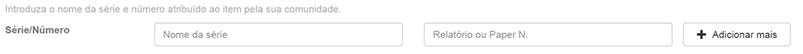
Identificadores:
Se conhecer um número ou código que identifique de forma única este documento em algum sistema, digite-o aqui. Clique na seta à direita da caixa de entrada e, das opções disponíveis, seleccione a opção correcta. Ex.:
Doc.Gov. --
Número de documento governamental - e.g. NASA SP 8084
ISBN – Número Internacional Normalizado de Livro - e.g. 0-1234-5678-9
ISSN - Número Internacional Normalizado de Publicação em Série - por exemplo, 1234-5678
ISMN - Número Internacional Normalizado de Música - e.g. M-53001-001-3
URI (Uniform Resouce Identifier) – Endereço Persistente - e.g. http://www.dspace.org/help/submit.html
Outro - Identificador único atribuído ao documento utilizando um sistema diferente dos acima.
Tipo:
Seleccione o tipo de trabalho – ou género – que melhor se adequa ao seu documento.
Idioma:
Seleccione no menu o idioma em que está escrito o seu documento.
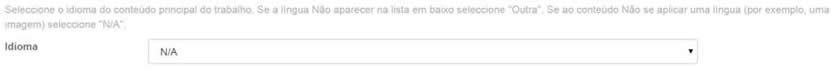
Se o seu documento não for de texto e não for adequado indicar o idioma na descrição, deixe a opção que aparece por defeito: N/A.
Clique no botão "Continuar" para prosseguir, ou clique no botão "Cancelar/Guardar" para parar e guardar ou cancelar o processo de
depósito.
Assunto/Palavras-chave:
Forneça todos os termos de assunto que entender adequados para descrever o documento, dos gerais aos específicos. Quanto mais descritores (ou palavras-chave) fornecer, mais provável será que os
utilizadores encontrem o documento nas suas pesquisas. Utilize uma caixa de entrada para cada termo de assunto. Pode obter mais caixas de entrada clicando no botão "Adicionar Mais":
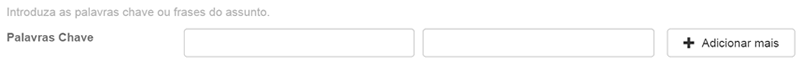
A comunidade a que pertence esta colecção pode sugerir o uso de um vocabulário específico, taxonomia, ou thesaurus. Se for esse o caso,
por favor, seleccione dessa lista os seus termos de assunto.
Resumo:
Pode cortar e colar um resumo nesta caixa, ou pode digitá-lo directamente. Não há limite para o tamanho do resumo. Sugerimo que inclua um resumo para conveniência dos utilizadores finais e para
aumentar as capacidades de pesquisa e recuperação do documento.
Patrocinadores:
Se o seu documento é produto de investigação patrocinada, pode dar
aqui informações sobre o(s) patrocinador(es). Este é um campo em formato livre onde pode compor a nota como lhe parecer melhor. Exemplo:
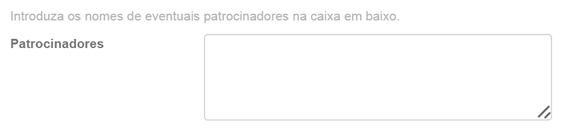
Descrição:
Aqui pode acrescentar qualquer outra informação que descreva o documento que está a carregar ou comentários que possam ser de interesse para os seus utilizadores.
Clique no botão "Continuar" para prosseguir, ou clique no botão "Cancelar/Guardar" para parar e guardar ou cancelar o processo de depósito.
Existem dois métodos para inserir o ficheiro que deseja carregar:
- Clique no botão "Selecionar ficheiro ou arrastar e soltar ficheiros" e surgirá uma janela mostrando os ficheiros disponíveis.
Percorra os seus directórios e pastas até encontrar o ficheiro que pretende carregar. Clique duas vezes sobre o nome do ficheiro que deseja carregar, e o nome será inscrito na caixa de entrada.
- Usando o mesmo procedimento anterior, com a diferença de que deve clicar no ficheiro e arrastar para a área indica.
Descrição dos ficheiros
O campo "Descrição do Ficheiro" permite ajudar os utilizadores a compreender o que existe em
cada ficheiro, por exemplo, "artigo principal" ou "imagens" ou "programa de computador" ou "conjunto de dados". Escrever a descrição de cada ficheiro do documento e clicar no botão "Próximo".
Para depositar e dar condições de acesso a um ficheiro, precisamos de saber qual o seu formato, por exemplo, "PDF", "HTML", ou "Microsoft Word". Se o sistema não reconhecer automaticamente o formato do ficheiro que carregou, ser lhe-á pedido que o descreva. Se aparecer nessa lista, seleccione-o e depois prima "Enviar". Se o formato não constar da lista, clique em "outro formato" e descreva-o na caixa de texto ao fundo da página.
Certifique-se que deu o nome da aplicação utilizada para criar o ficheiro e qual a versão da aplicação, por exemplo, "Autodesk AutoCAD R20 para UNIX". Para obter mais informações sobre formatos de
ficheiros, veja Formatos Suportados pelo DSpace.
Ficheiro Carregado
Depois de ter feito o upload de um ficheiro, verifique as informações apresentadas para se certificar de que está correcto.
Existem mais duas formas de verificar se os ficheiros foram carregados correctamente:
- Clique sobre o nome do ficheiro e ele abrirá numa nova janela do browser, de modo a poder verificar o conteúdo.
- Compare o checksum do ficheiro carregado com o do ficheiro original.
Se está a carregar só 1 ficheiro, clique no botão
"Adicionar outro ficheiro".
Quando tiver a certeza de que todos os ficheiros deste documento foram carregados com êxito, clique no botão "Continuar".
Se está a carregar mais do que um ficheiro, clique no botão "Adicionar outro ficheiro". Quando tiver a certeza de que todos os ficheiros deste documento foram carregados com êxito, clique no botão "Continuar".
Se está a carregar uma página HTML com referência a vários ficheiros, clique no botão "Adicionar outro ficheiro" e faça o upload de todos os
ficheiros referenciados na página HTML. Depois, na coluna "Extensões principais" seleccione o ficheiro ou extensão da página de índice ou da página inicial da página web. Isso irá garantir que todos os ficheiros embutidos serão exibidos correctamente na página HTML. Em seguida, clique no botão "Seguinte".
Verificação de Checksums dos ficheiros
O DSpace gera um checksum MD5 para cada ficheiro armazenado; usa-se internamente, a fim de verificar a integridade dos ficheiros ao longo do tempo (o checksum do ficheiro não deverá mudar). Pode utilizar este checksum para ter a certeza se o ficheiro carregado é realmente o que foi recebido.
Se quiser fazer a verificação do ficheiro, clique em "Mostre checksums" na página "Ficheiro carregado". O checksum MD5 para cada
ficheiro que recebemos encontra-se à direita do nome do ficheiro. Poderá usar um programa local para gerar os seus próprios checksum, compará-los com os nossos e verificar se coincidem. Na maioria dos sistemas Unix-like (incluindo o Mac OS X), use md5sum. Por exemplo, digite "md5sum MYFILE" para cada arquivo que deseje verificar; o resumo
aparecerá no ecrã. Para Windows, estão disponíveis gratuitamente ferramentas MD5: tente md5 (a partir de http://www.fourmilab.ch/md5/), ou md5sum, disponível através do pacote textutils no Cygwin (http://www.cygwin.com/).
Todos estes utilitários terão de ser executados a partir de uma janela de linha de comando ou de terminal. O valor total da execução da ferramenta md5 no seu ficheiro deverá ser exactamente igual ao que apresenta o repositório.
Esta página permite rever a informação introduzida para descrever o documento. Para corrigir esta informação, premir o botão respectivo do lado direito, ou utilizar os botões da barra de progresso no topo da página para percorrer as diferentes páginas de depósito. Quando terminar, premir o botão "Continuar".
Premir o botão "Cancelar/Guardar" para terminar e guardar, ou para cancelar o depósito.
O Repositório necessita da aceitação da licença de distribuição não exclusiva para que o seu documento seja visível no Repositório.
A leitura do texto da licença é obrigatória. Se tiver algumas questões, por favor contacte o Administrador do Repositório.
Algumas colecções necessitam dum passo adicional de verificação e revisão, enquanto noutras a disponibilização pública dos documentos é imediata.
Receberá uma notificação por e-mail, assim que o seu documento passar a integrar a colecção, ou se, por alguma razão, existir algum problema
com o depósito do seu documento. Se tiver algumas questões sobre os procedimentos de depósito para uma colecção específica, por favor contacte a comunidade responsável por essa colecção. Poderá verificar a situação de cada depósito na página "Área Pessoal".
Quando o seu documento é carregado no Repositório, é atribuído um endereço URL persistente. Isto significa que, contrariamente a
muitos endereços, este identificador não será alterado quando houver migrações de hardware ou quando são efectuadas alterações no sistema.
Este endereço deverá ser o usado em citações ou outras comunicações. Os endereços persistentes estão registados com o Handle
System, um sistema para atribuição, gestão e resolução de identificadores persistentes, conhecidos por "handles", para objectos digitais e outros recursos disponíveis na Internet.
Se for um utilizador autorizado ou supervisor, ou se é membro de uma equipa responsável por uma colecção ou manutenção de metadados do Repositório, encontrará nesta página o seguinte:
- Uma lista de depósitos em curso – desta lista poderá retomar os processos de depósito pendentes ou remover/cancelar depósitos pendentes
- Uma lista de depósitos que está a supervisionar ou nos quais colabora
- Uma lista de depósitos que aguardam a sua intervenção (por. Ex: aceitação de depósito ou edição de metadados)
- Uma ligação à lista de depósitos que submeteu e já foram aceites
Esta opção permite editar os dados da sua conta no Repositório. Precisa de estar autenticado no Repositório para poder alterar os seus
dados pessoais.
| Activar alertas por e-mail |
topo |
Os utilizadores podem subscrever colecções para receberem alertas por e-mail, quando novos documentos são adicionados. Não há limite de
número de colecções que um utilizador pode subscrever. Para activar os alertas:
- Iniciar sessão no Repositório
- No menu do topo, do lado direito, clique no seu email e escolha "Serviço de Alertas".
- Seleccionar a colecção para a qual pretende activar os alertas. Repetir a operação para cada uma das colecções pretendidas
- Para editar a lista de subscrições, ir para a página Serviço de Alertas
Informação adicional... |
topo |
Para obter mais informação sobre o Repositório, por favor contacte o Administrador do Repositório.
Para informação e novidades sobre o DSpace, visite o DSpace.
Sumário | Percorrer | Pesquisa | Communidades
| Colecções | Depositar | Formatos de ficheiros | Área Pessoal | Editar
Conta | Serviço de alertas